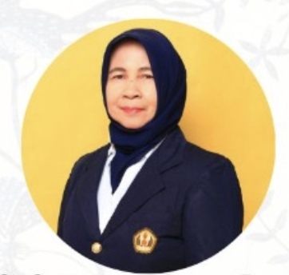
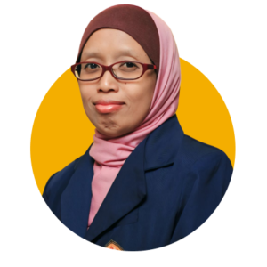
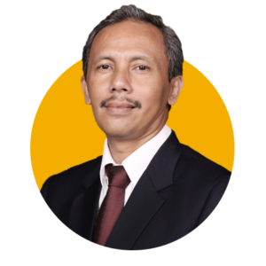
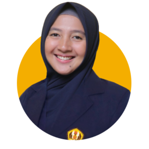
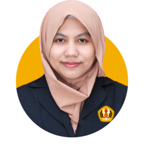

Profesor Statistika
Prof. Dr. Toni Toharudin, M.Sc.
Statistika spasial · Small Area Estimation · Structural Equation Modeling
S-3SINTA 60142215 publikasi
Lihat profil lengkap →Direktori Akademik
Direktori statis berisi identitas, afiliasi, bidang keahlian, pendidikan, dan publikasi terpilih yang ditelusuri melalui SINTA–Scopus.
Profesor Statistika
Statistika spasial · Small Area Estimation · Structural Equation Modeling
Profesor Statistika
Statistical quality control · Penjaminan mutu · Reliabilitas
Profesor Statistika · Ketua Program Studi Magister Statistika Terapan
Bayesian statistics · Spatial and spatiotemporal statistics · Disease mapping

Dosen Statistika
Analisis multivariat · Analisis korespondensi · Regresi terapan
Ketua Urusan Internasionalisasi
Analisis multivariat · Machine learning · Data kategorik
Dosen Statistika
Peramalan · Deret waktu · Teori antrean

Ketua Program Studi S1 Statistika
Statistical machine learning · Klasifikasi citra · Copula
Kepala Departemen Statistika
Bayesian statistics · Expert elicitation · Global sensitivity analysis
Dosen Statistika
Data longitudinal · Model multilevel · Varying coefficient models
Dosen Statistika
Peramalan · Cuaca dan iklim ekstrem · Clustering
Dosen Statistika
Flexible statistical modeling · Robust statistics · Teori statistika
Dosen Statistika
Data panel · Statistika spasial · Structural Equation Modeling
Dosen Ilmu Aktuaria
Risiko aktuaria · Deret waktu finansial · Copula
Dosen Statistika
Analisis citra · Deep learning · Medical imaging
Dosen Statistika
Peramalan deret waktu · Clustering · Statistical machine learning
Dosen Statistika
Analisis regresi · GLM dan GLMM · Regresi spasial
Dosen Ilmu Aktuaria
Peramalan · Copula · Asuransi jiwa

Dosen Ilmu Aktuaria
Ilmu aktuaria · Risiko finansial · Asuransi
Ketua Program Studi Sarjana Ilmu Aktuaria
Asuransi jiwa dan umum · Risiko aktuaria · Reasuransi

Dosen Statistika
Deret waktu · Peramalan · Epidemiologi
Dosen Ilmu Aktuaria
Komputasi statistika · Optimisasi · Reliabilitas
Dosen Ilmu Aktuaria
Matematika aktuaria · Cadangan asuransi · Model finansial stokastik
Dosen Statistika
Statistical machine learning · Klasifikasi · Komputasi statistika
Dosen Ilmu Aktuaria
Ilmu aktuaria · Risiko asuransi · Business analytics

Dosen Statistika
Machine learning · Klasifikasi · Neural networks
Dosen Statistika
Statistika finansial · Optimisasi portofolio · Deret waktu